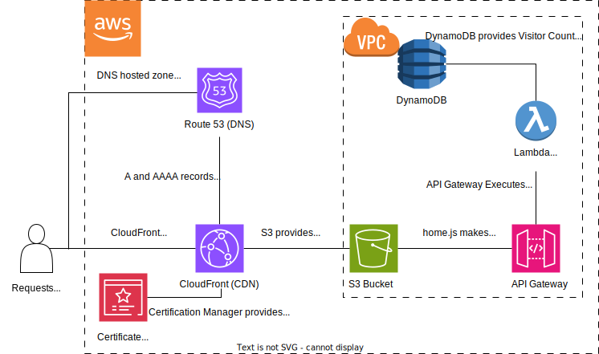

Home is where the heart is..
Detail-oriented and highly motivated Junior Network Engineer with a strong foundation in network technologies and a passion for ensuring seamless network operations. Proficient in configuring, maintaining, and troubleshooting network infrastructure. Eager to contribute to the success of an organization by providing valuable support in optimizing network performance, security, and reliability. A quick learner, adept at collaborating with cross-functional teams to achieve project goals and resolve technical challenges.
Cisco - CCNA
Junos - JNCIA
Python
LAN/WAN
TCP/IP Networking
Linux Admin
Wireshark
HTML/CSS
Customer Support
Routing and Switching
Troubleshooting
Hardware Maintenance
Provided hands-on support for Cisco, Fortinet, and Juniper network devices, ensuring optimal performance and minimal downtime
Conducted physical installation, maintenance, and troubleshooting of networking equipment.
Assisted with network configuration, port activations, and hardware replacements as needed
Collaborated with network engineers to resolve technical issues and implement changes to the network infrastructure
Diagnosed and resolved complex technical issues of networking cameras, servers, and related technologies while minimizing downtime and optimizing customer's performance.
Maintained servers for both internal testing and customer demonstrations, ensuring high uptime and seamless upgradability while performing regular monitoring and maintenance.
Developed comprehensive documentation for installation and troubleshooting of networking cameras, servers, and related software and hardware.
Collaborated with sales teams to identify customer requirements and recommend optimal solutions.
Maintained a high level of customer satisfaction by providing prompt and efficient support throughout the entire support lifecycle.
This project is hosted in an aws S3 bucket and delivered with Cloudfront
CloudFront helps deliver the webpage content as well as provide full HTTPS encryption
AWS's Route53 provide DNS resolution and propagates them to other Domain Servers
This webpage also uses a simple Lambda Function to provide and update it's visitor count, stored in DynamoDB. It also accesses this Lambda function with an API gateway
While researching various career paths, and leaning towards cloud jobs due to remote, I came across something known as the The Cloud Resume Challenge. Created by Forrest Brazael, the challenge is a hands-on project designed to help apply knowledge from cloud certifications to an actual project. While the challenge offered variations for each Cloud provider, the project itself remained largely the same. The challenge itself was split into several steps:
After finishing my CCNA and JNCIA, I started working on a Red Hat Linux Certificate to help strengthen my linux fundamentals that I had either failed to learn or had forgotten. I had decided to strive for a Cloud Engineer position and had been vaguely following a simple career path I found online, although I had skipped a step with the CCNA. I also run a small Linux Home server and I thought this would be a good time to learn from the ground up, rather than my current ad hoc approach. Eventually I decided to take a small break, after learning some major fundamentals, and do something more hands-on to both see how much I enjoyed cloud work and create something a little more concrete for my Resume
While no Web Designer, I had done some simple web development in the past, including a large javascript visualization, and I had always grealy enjoyed how responsive web development was compare to traditional software development. I started by by finding a sample template online, mostly for the dark mode color scheme, and then heavily tweaking it. Funnily enough, I ended up using a different color scheme, specifically facebook's from a website comparing different popular darkmode color schemes. What became most useful was the use of bootstrap columns from the original, something I had not used before. I really enjoyed the skills column portion and this was the main remaining influence from the original template, besides the font choice. I also spent a large amount of time trying to ensure the website would properly display for mobile devices, mostly by adjusting the font-size depending on the screen width. I also discovered that phones display websites differently unless you specifically indicate the website was designed for mobile devices (this is so legacy websites are readable on a phone screen). I also learned about a useful "viewport" tag that enables you to get the width of the user's screen. This was mainly used to properly size my pictures/diagrams for the website
Creating a simple static website with an S3 bucket was quite easy. I simply uploaded the relevant files and enabled it for static website hosting. I actually ended up using this static website link for much of my testing, due to my actual domain being blocked by my company's network (since it was just registered). After purchasing my domain name and configuring cloudfront(AWS's CDN) and Route 53 (AWS's DNS) I waited for the other DNS servers to propagate. I knew how to do a dns check (NS lookup) and even used some external dns checker websites, to bypass my company's dns server, but I knew my domain name was not returning any IP addresses. I knew it would take some time to propagate, but after about 48 hours and still no name resolution, I looked up my issue and discovered the NS records in my hosted zone did not match the name servers for my registered domain. After ensuring they matched, my domain started to resolve to propery aws IPs instantly My HTTPS certificate instantly worked as well, which I thank amazon's Certificate Manager for making it simple, which was great since I was unable to test it before getting my domain name to resolve. After checking my root domain name properly redirects and HTTPS was required, along with continually tweaking my website code, it was time to implement some basic web functions.
One of the good things about this challenge, is while it gives you the basics for each steps, it does not detail how to do it. For example, for the javascript and python steps it just links to a tutorial on the language not how to use it. So, while the visitor counter was extremely simple, I had to learn how to call on the database. Luckily, it was similar to how most inputs are taken in, minus some database syntax to interact with the proper database item. After ensuring the proper permissions between the lambda function, the API gateway, and the database, while also enabling CORS on my API gateway, I was able to successfully update and display my Visitor Counter.
I wanted to add an additional feature with lambda/aws, since I was comfortable programming, but it took a bit to decide on what. I contemplated displaying different days of the week, similar to github's calendar, but ultimately decided something much simpler: time since the last visit. accomplished this using unix time which is a counter, in milliseconds, from the beginning of "time" (which is defined as 1/1/1970).
This unix time is the reason many devices show 1970 as the year when in an error state and, since I'm not dealing with timezones, I simply used this time to find the difference from the last visit. I fiddled with javascript logic to display this cleanly in a weeks, days, hours, minutes, and seconds format, ensuring it correctly displayed any spaces and singular/plural units as needed. I also decided to not include unites larger than weeks, since months can range in number of days